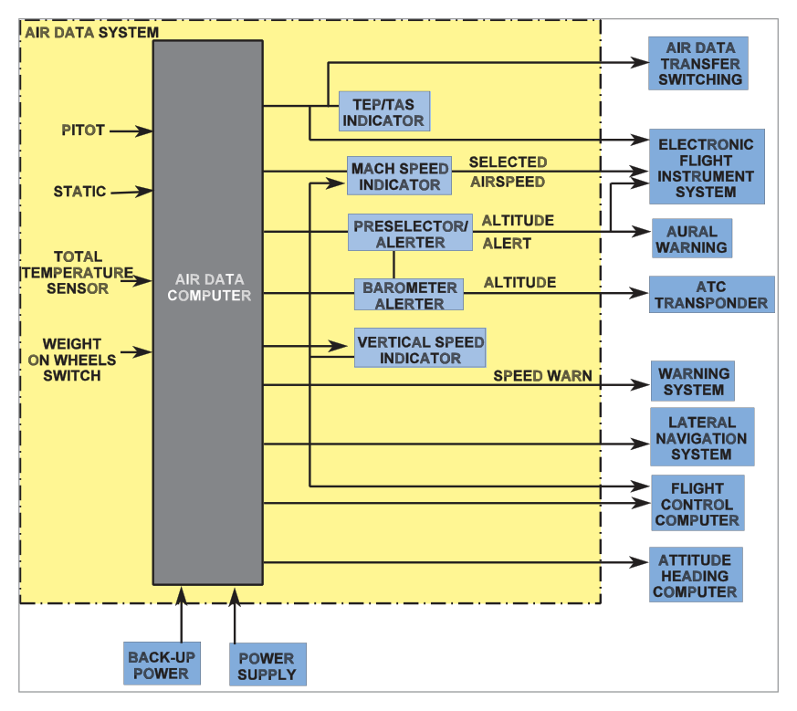
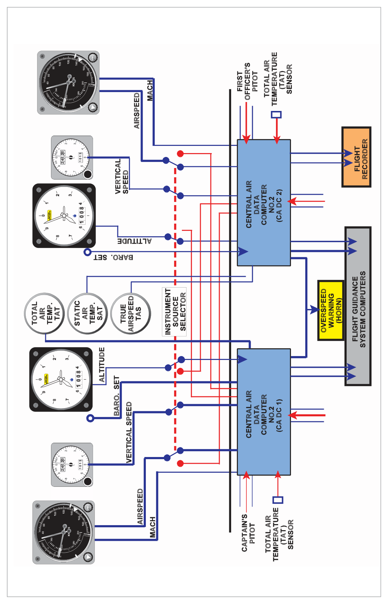

What this section covers: What an ADS is, its components, and what it replaces.
In many modern large aircraft, conventional pressure instruments (altitude, airspeed, Mach number) are replaced by indicators driven by a central computer — the Air Data Computer (ADC). Together with sensors and displays, it forms the Air Data System (ADS).
ADS Components
Pitot pressure sensor
Static pressure sensor
Total Air Temperature (TAT) probe
Power supply
The ADC unit itself
Display instruments
Standard ADS Instrument Outputs
Standard outputs: Altitude, Vertical Speed, Airspeed (CAS/IAS), Mach Number. Additional outputs: Total Air Temperature (TAT), Static Air Temperature (SAT), True Airspeed (TAS).
Configuration Module
Because many aircraft types may use the same basic ADC, a Configuration Module is used to integrate it into each specific aircraft. This module is calibrated for differences in probe positioning efficiency to obtain the most accurate indications possible.

Fig. 8.1 – Conventional Air Data System schematic — source p.97
Note: A weight-on-wheels switch decouples the stall warning system when the aircraft is on the ground. Angle of Attack (AOA) may also be an input to the ADC for certain aircraft systems.
The ADS outputs are essential to the AFCS (Automatic Flight Control System) and also feed: altitude transponder, flight data recorder, navigation computer, and other systems.
2. Pitot-Static System and Redundancy
What this section covers: How multiple independent systems provide redundancy.
A typical aircraft has identical instrument sets on the Captain's and First Officer's panels. Each set connects to one of two independent ADCs fed from independent pitot and static sources that can be cross-connected.
Standby Instruments
In addition to ADC-fed instruments, there is always:
A standby barometric altimeter — fed directly from an independent pitot-static source
A standby airspeed indicator — fed directly from the same independent source
Each of the three independent pitot-static systems uses cross-coupled static vents on each side of the fuselage to reduce error from sideslip or yaw.
What this section covers: The two computational methods used in ADC design.
3.1 Analogue ADC
Uses continuous physical variables (voltage, pressure, shaft rotation) to represent and transmit measurements. A Pressure Transducer converts the pressure inputs to shaft rotation via a 2-phase servomotor connected to a CX synchro. The analogue ADC is internally divided into modules:
Altitude module
Computed Airspeed (CAS) module
Mach Speed module
True Airspeed (TAS) module
Rate of Climb module (using data from altitude module)
3.2 Digital ADC
Uses digital (binary) data for assessment and transmission. Analogue-to-Digital Converters (ADCs) at the input side convert pressure, temperature, and AOA measurements from analogue to digital form for internal processing and onward transmission to flight deck displays.
Key Difference: Analogue ADC uses shaft rotations and servomotors. Digital ADC uses binary data and A-D converters. Both take the same inputs (pitot, static, temperature, AOA) and produce the same outputs, but via different computational methods.
flowchart LR
A["Pitot Pressure"] --> C["ADC"]
B["Static Pressure"] --> C
T["TAT Probe"] --> C
AOA["AOA (some types)"] --> C
C --> D["Altitude"]
C --> E["Airspeed (CAS)"]
C --> F["Mach Number"]
C --> G["TAS"]
C --> H["Vertical Speed"]
C --> I["TAT / SAT"]
C --> J["AFCS / FDR / XPDR / Nav Computer"]
4. System Redundancy
What this section covers: How failures are accommodated without losing air data.
Redundancy is provided through:
Change-over cocks — permit an alternative static source to connect to the computer.
Electrical switching — Captain's instruments can be fed from the First Officer's ADC and vice versa.
Mixed sourcing — in some aircraft, ADC outputs are mixed to both sides of the panel, reducing the risk of an undetected malfunction.
Standby instruments — available for total ADC failure due to power loss.
What this section covers: How the system alerts pilots to ADC malfunctions.
A comparison monitor can be incorporated to automatically compare the outputs of both ADCs and warn the pilot of malfunction. With purely mechanical instruments, comparison was done visually only.
Warning Flags: A warning flag appears on the affected ADS instrument if there is loss of valid data or an internal failure. Additionally, a light illuminates on the instrument warning panel or central warning system indicator.
6. Built-In Test Equipment (BIT / BITE)
What this section covers: The three types of BITE and their functions.
Important: There is NO provision for manual input of data into the ADC in the event of failure. BITE provides prompt indication of malfunction but cannot substitute for correct sensor inputs.
BITE Type
When it Runs
What it Checks
Power Up BITE
On start-up or after a power break
Microprocessor, Memory Store, Air Data functions
Continuous BITE
Throughout operation (~once per second)
Automatic check of all input and output stages
Maintenance BITE
On the ground by maintenance crew
Current failures and historical failures (via Test/History switch)
7. Advantages of an Air Data System
What this section covers: Why ADS is superior to conventional mechanical instruments.
7.1 Improved Displays
Electrically-servoed instrumentation gives complete freedom to design unambiguous, easier-to-read displays including digital, moving tape, and combined formats.
7.2 Reduced Instrument and Lag Errors
Friction loss in mechanical linkages is the major source of instrument error in conventional instruments, also causing lag. Servomotors in ADS largely eliminate both problems.
7.3 Error Correction
Computing height, airspeed, etc. within one computer allows error corrections to be applied through specially shaped cams. For example, Position Error Correction (PEC) can be computed in the Mach channel and then applied also in the height and airspeed channels.
7.4 Central Source for Other Systems
The ADC provides air data in many forms required by other aircraft systems — AFCS, FDR, transponder, navigation computer, and more.
7.5 Clean Design
Electrically-driven instruments reduce the amount of pneumatic plumbing behind the panel to only the standby instruments' pitot-static lines. Benefits: space saving, easier maintenance, shorter pitot-static lines reduce acoustic errors.

Fig. 8.4 – Combined Air Data System showing dual-ADC architecture — source p.101
Three BITE types: Power Up, Continuous (every second), Maintenance.
No manual data entry possible into ADC — BITE only gives warnings.
ADS advantages: better displays, less lag/instrument error, error correction (PEC), central source, cleaner design.
Practice Questions & Detailed Answers
Chapter 8 of the Oxford source text does not contain a printed question set. The following questions are instructor-generated and are representative of DGCA CPL/ATPL examination style for this chapter.
Q1.Which of the following correctly lists the standard outputs of an Air Data System?
TAS, SAT, TAT, fuel flow
Altitude, vertical speed, airspeed (CAS), Mach number
Altitude, heading, airspeed, Mach number
Altitude, vertical speed, TAS, Mach number
Correct Answer: (b) Altitude, vertical speed, airspeed (CAS), Mach number
Explanation: The standard ADS instrument outputs are altitude, vertical speed, airspeed, and Mach number. TAS, TAT, and SAT are additional (optional) outputs. Heading is not an ADS output — it comes from gyroscopes or magnetic sensors. See Section 1.
Why the others are wrong:
(a) Fuel flow is an engine parameter, not an ADS output.
(c) Heading is not derived from pitot/static/temperature data.
(d) TAS is an additional output, not a standard one — and VSI is standard, not optional.
Instructor's Note: Standard = altitude, VSI, CAS/IAS, MNo. Additional = TAS, TAT, SAT. These categories are tested directly.
Q2.The purpose of the Configuration Module in an Air Data System is to:
allow the ADC to be manually programmed in case of sensor failure
calibrate the ADC for differences in probe positioning specific to each aircraft type
convert analogue signals to digital format for transmission
provide redundancy when the primary ADC fails
Correct Answer: (b) calibrate the ADC for differences in probe positioning specific to each aircraft type
Explanation: Because many aircraft types use the same basic ADC, the Configuration Module adapts it by accounting for the pressure/temperature gathering efficiencies of that specific aircraft's probe positions, obtaining the most accurate indications possible. See Section 1.
Why the others are wrong:
(a) No provision exists for manual data input into the ADC — this is explicitly stated in the source.
(c) A-D conversion is performed by Analogue-to-Digital Converters inside the ADC, not the Configuration Module.
(d) Redundancy is provided by dual ADCs and cross-connection, not the Configuration Module.
Instructor's Note: The Configuration Module is an aircraft-specific calibration layer — it makes a generic ADC specific to one aircraft type's installation geometry.
Q3.In a digital Air Data Computer, the Analogue-to-Digital Converters process inputs from:
pitot pressure and static pressure only
pitot pressure, static pressure and total air temperature
pitot pressure, static pressure, temperature, and angle of attack
pitot pressure, static pressure and computed airspeed
Correct Answer: (c) pitot pressure, static pressure, temperature, and angle of attack
Explanation: The source text states that A-D Converters process "measurements of pressure, temperature and AOA". This includes pitot pressure, static pressure, TAT, and angle of attack (AOA). See Section 3.2.
Why the others are wrong:
(a) & (b) Incomplete — AOA is also an input (in applicable aircraft).
(d) Computed airspeed is an output, not an input to the A-D converters.
Instructor's Note: Inputs to ADC: pitot, static, TAT (and AOA in some types). Outputs include altitude, CAS, Mach, TAS, VSI, TAT, SAT.
Q4.Which type of BITE check runs automatically approximately once every second during normal ADC operation?
Power Up BITE
Maintenance BITE
Continuous BITE
Periodic BITE
Correct Answer: (c) Continuous BITE
Explanation: Continuous BITE is an automatic check of all input and output stages carried out throughout ADC operation, approximately once every second. See Section 6.
Why the others are wrong:
(a) Power Up BITE runs only on start-up or after a power break.
(b) Maintenance BITE is run on the ground by maintenance personnel, not automatically.
(d) "Periodic BITE" is not a category used in the source text.
Instructor's Note: Three BITE types: Power Up (start-up), Continuous (every second, automatic), Maintenance (ground, manual). Know which is which.
Q5.A major advantage of an Air Data System over conventional mechanical instruments is that:
static pressure errors are eliminated because the static vents are heated
position error correction can be applied within the computer and shared across height and airspeed channels
the system does not require pitot or static sources
the system is immune to total electrical failure
Correct Answer: (b) position error correction can be applied within the computer and shared across height and airspeed channels
Explanation: Within the ADC, Position Error Correction (PEC) computed in the Mach number channel can be applied directly to the height and airspeed channels as well — a significant advantage over mechanical instruments where each instrument must compensate independently. See Section 7.3.
Why the others are wrong:
(a) ADS still uses pitot-static vents and is subject to position error — the ADC corrects for it, but it is not eliminated.
(c) ADS still requires pitot and static inputs — it processes them electronically rather than mechanically.
(d) Electrical failure will affect ADC-driven instruments — this is why standby mechanical instruments exist.
Instructor's Note: The ADS advantage of centralized PEC is important — one computation corrects multiple outputs simultaneously. This is not possible with individual mechanical instruments.
Q6.Cross-coupled static vents located on each side of the fuselage are used in a pitot-static system primarily to:
provide backup static pressure in case one vent is blocked
reduce error caused by sideslip or yaw
increase the sensitivity of the static pressure measurement
prevent icing of the static vents
Correct Answer: (b) reduce error caused by sideslip or yaw
Explanation: By averaging the static pressure from both sides of the fuselage, cross-coupled vents cancel out the pressure asymmetry caused by sideslip or yaw, producing a more accurate static reference. See Section 2.
Why the others are wrong:
(a) Backup static is provided by the alternate static source, not by cross-coupling of normal vents.
(c) Sensitivity is a capsule property, not related to vent geometry.
(d) Pitot heating prevents icing; static vents may also be heated but that is a separate function.
Instructor's Note: Cross-coupling = sideslip/yaw error reduction. Alternate static = backup for blockage. These are two different features — don't confuse them.
Master Reference Tables
Feature
Detail
Section
Standard ADS outputs
Altitude, VSI, CAS/IAS, Mach number
§1
Additional ADS outputs
TAT, SAT, TAS
§1
ADC inputs
Pitot pressure, Static pressure, TAT, (AOA)
§3
Configuration Module
Aircraft-specific calibration for probe positioning
§1
Analogue ADC method
Servomotors, synchros, shaft rotation
§3.1
Digital ADC method
A-D converters, binary data
§3.2
Power Up BITE
Start-up: checks microprocessor, memory, air data functions
§6
Continuous BITE
Every ~1 second, automatic, all I/O stages
§6
Maintenance BITE
Ground only, manual, current + historical failures